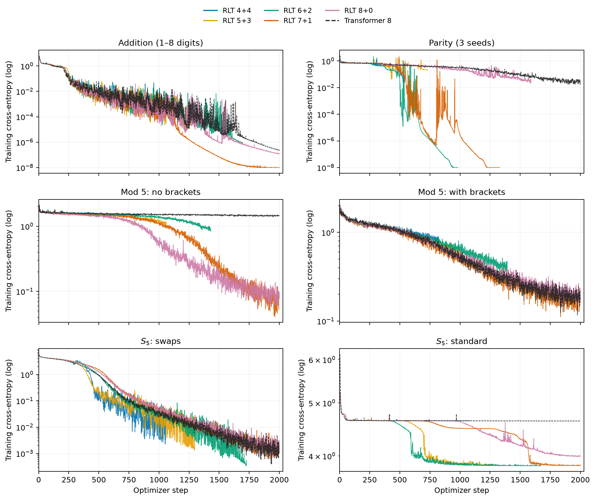
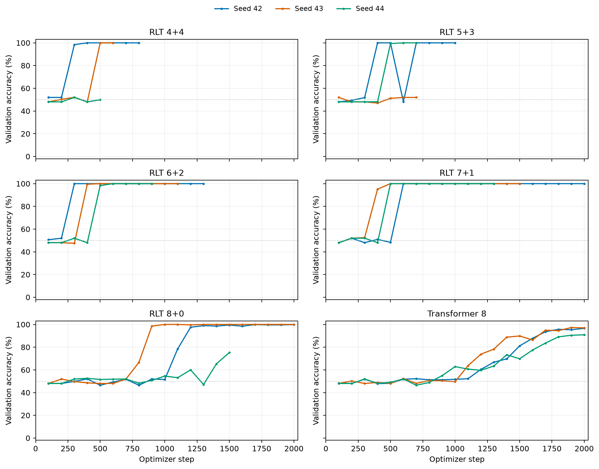

Depth that grows with the sequence.
Each token extends the recurrent path through the full decoder. After \(t\) tokens, that path traverses \(tL_D\) decoder blocks while the per-token block count stays fixed.
Architecture · Hardware · Reinforcement learning
Recurrent computation across prompt and response.
Architecture, execution and depth-eight algorithmic experiments.
Recurrent Looped Transformer (RLT) passes the decoder's final hidden state to the next token, together with that token's causal encoder representation. The decoder also retains a sliding-window attention (SWA) cache at every layer. It updates both forms of state for every prompt and response token.
The recurrent path grows with sequence length while the number of blocks evaluated per token stays fixed. The report describes batching encoder work and independent decoder sequences, and replaying sampled histories under current parameters for reinforcement learning.
Preliminary eight-layer comparisons show earlier parity learning for some RLT layouts and higher accuracy on flat modular arithmetic, with less separation on bracketed arithmetic and low accuracy on standard permutation tracking. Parity uses three initialization seeds; other tasks use one.
Each token extends the recurrent path through the full decoder. After \(t\) tokens, that path traverses \(tL_D\) decoder blocks while the per-token block count stays fixed.
Batch known-token encoder work and independent decoder updates. Reuse weights and memory, and checkpoint activations while preserving the reference computation.
Rebuild the full history under current parameters, including prompt states and decoder SWA KV. Keep recorded behavior probabilities tied to the actual sampler.

Here \(M_{\le t}\) is global encoder memory, \(s_t\) is the recurrent output, and \(C_t^D\) contains layerwise decoder KV. A SWA window of \(W\) includes the current token and retains at most \(W-1\) historical entries for the next update.
Compatible encoder and decoder attention and FFN weights can be shared. A tied 48+48 layout illustrates this option in the report; the experiments below use untied eight-layer layouts.

RLT w/o feedback removes the previous-output feedback path, learned initial state, state normalization, gated merge and feedback projection. It feeds \(z_t^0=e_t\) directly into the decoder while retaining global cross-attention and per-layer SWA.
Known tokens run in parallel within each decoder layer during training and prefill; generation proceeds one token at a time. The 4+4 control was implemented after the snapshot for future matched ablations.

Snapshot: September 15, 2026, 16:11:47–16:12:10 UTC. Six architectures across six tasks, with 48 runs in total. At collection, 21 runs had reached the planned 2,000 optimizer steps and 27 were unfinished. All results use held-out validation sets at training lengths.
We compare RLT 4+4, 5+3, 6+2, 7+1, 8+0 and Transformer 8 at width 512, four attention heads and global batch 512. RLT has 26.10–28.73M parameters; Transformer 8 has 25.31M. RLT 8+0 still applies the recurrent merge.
Parity varies initialization seeds 42, 43 and 44 while keeping the training stream and validation set fixed. Other tasks use seed 42. Every parity mean and sample SD uses all three seeds at the same step (n = 3, ddof = 1).
Each row uses the latest step available for all six models and all required seeds within that task. Addition requires a correct greedy answer and EOS; other tasks use final-answer or final-state accuracy.
| Task | Step | RLT 4+4 | RLT 5+3 | RLT 6+2 | RLT 7+1 | RLT 8+0 | Transformer 8 |
|---|---|---|---|---|---|---|---|
| Addition | 1000 | 100.00 | 98.44 | 100.00 | 100.00 | 100.00 | 100.00 |
| Parity | 500 | 83.29 ± 28.94 | 83.51 ± 28.00 | 99.44 ± 0.98 | 82.77 ± 29.84 | 48.70 ± 2.60 | 48.48 ± 0.53 |
| Mod-5, flat | 800 | 22.40 | 21.74 | 20.83 | 22.53 | 21.74 | 20.70 |
| Mod-5, brackets | 800 | 37.50 | 36.72 | 36.72 | 40.10 | 37.63 | 35.55 |
| S5, swaps | 1000 | 100.00 | 99.61 | 95.70 | 89.84 | 86.33 | 89.84 |
| S5, standard | 1000 | 1.17 | 3.52 | 1.95 | 1.56 | 1.17 | 1.17 |

At step 500, RLT 6+2 reaches 99.44 ± 0.98%, compared with 48.48 ± 0.53% for Transformer 8. All three RLT 6+2 seeds reach 100% by step 600; Transformer 8 reaches 94.84 ± 3.43% at step 2,000. RLT 4+4, 5+3 and 7+1 average about 83% at step 500, with SDs of 28–30 percentage points.

These three models had completed both variants at 2,000 steps with seed 42, after 1,024,000 training examples per run.
| Task | RLT 7+1 | RLT 8+0 | Transformer 8 |
|---|---|---|---|
| Mod-5, flat | 95.44 | 90.89 | 20.57 |
| Mod-5, brackets | 78.26 | 75.52 | 79.56 |
The task generators differ in operator structure and label distribution; parentheses also occupy token positions.


The preferred encoder–decoder split varies by task. These comparisons change feedback, attention structure, parameter count and compute together; matched RLT w/o feedback runs will isolate hidden-state feedback. Hardware throughput and RL performance remain to be measured.
Earlier state-tracking results contributed by @AradhyeAgarwal use a separate implementation with about 79K parameters, three seeds and training length 32. Evaluation uses 2,048 test programs per task and length, extending to 128 operations.
Known tokens can be encoded in a causal batch. Decoder updates still proceed in token order, constructing both recurrent outputs and decoder SWA caches.
| Mode | Encoder | Decoder |
|---|---|---|
| Prompt prefill | Causal batch | Update complete state through every prompt token. |
| Generation | Incremental | Sample from the preceding state, then consume each token exactly once. |
| Pretraining | Causal batch | Full BPTT over all valid next-token targets. |
| SFT | Causal batch | Assistant-target loss; all context tokens update differentiable state. |
| RL replay | Rebuild with current weights | Replay the complete history and SWA caches; score each action before consuming it. |
Forward consistency and complete gradients are separate requirements. Full BPTT includes paths through recurrent outputs, decoder KV, and encoder memory. Detaching any of these changes the gradient. Parameter updates invalidate old caches for exact current-policy replay.
Behavior log-probabilities must describe the actual sampling distribution. Exact importance sampling additionally requires support coverage. Shared transitions remove structural prompt-boundary mismatch; numerical kernel parity and off-policy estimation remain separate concerns.
For the execution-level distinction, see the prefill–decode kernel mismatch note.
If you find this work useful, please cite:
@techreport{zhang2026recurrentlooped,
title = {Recurrent Looped Transformer},
author = {Zhang, Yifan and Feng, Jichen and Qin, Shihan},
year = {2026},
month = sep,
url = {https://github.com/yifanzhang-pro/recurrent-looped-tranformer}
}{kind=link}
{kind=link}